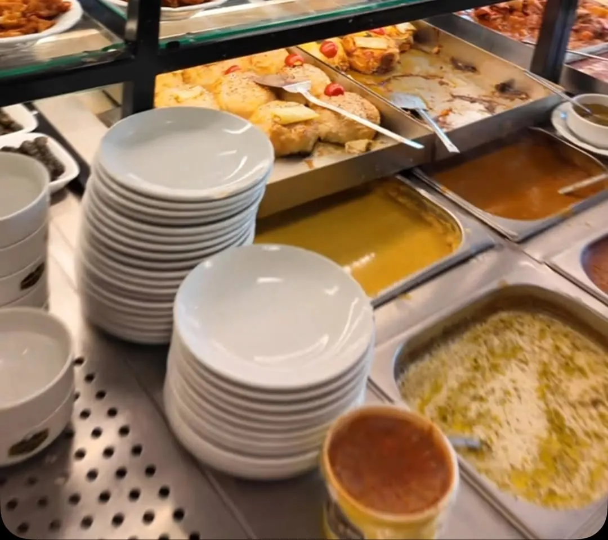
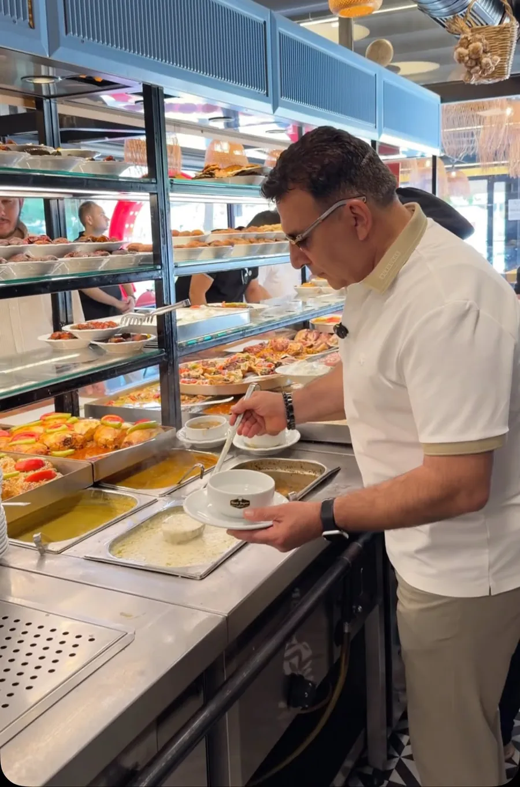
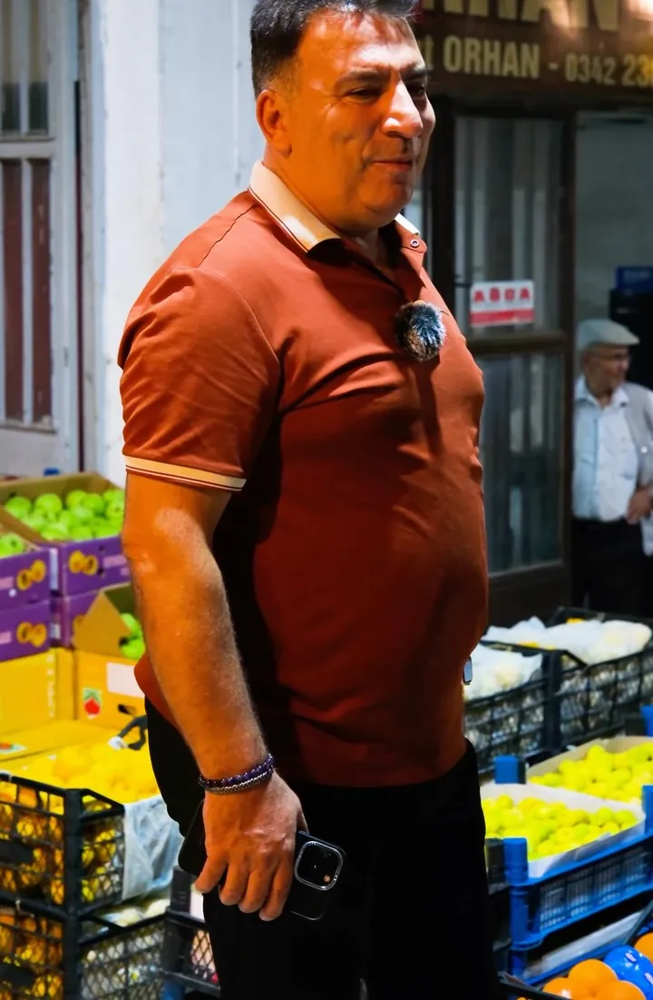
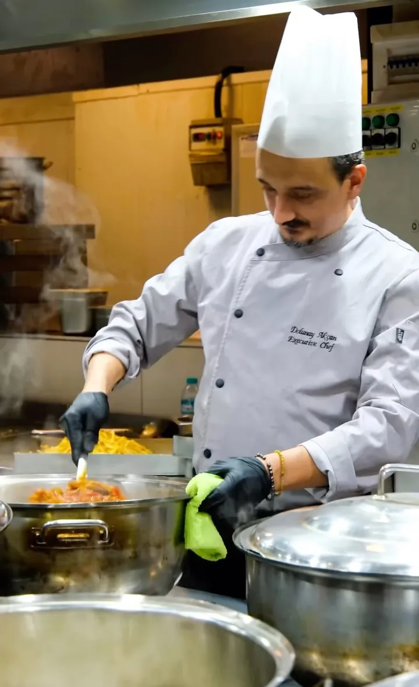

Batıkent, Kürşat Tüzmen Bulvarı
Antep'in ev yemekleri tek sofrada
Her gün 70 çeşit yöresel yemek, yüzde yüz zeytinyağıyla. Tezgâhtan seçin, aldığınız kadar ödeyin.


Beğendiğini seç, aldığın kadar öde
- Açık tezgâh
Tencerelere bakın, gözünüzle seçin.
- Zeytinyağıyla
Bütün yemeklerimiz yüzde yüz zeytinyağıyla pişer.
- Unutulan tarifler
Yuvalama, şivediz, kuru dolma. Kebabın ötesindeki Antep.
Bugün tencerede
Paket servis için ekleyin, WhatsApp'tan gönderin.
Herkes uyurken hâldeyiz
Sabah 03.30'da Namık Baydar ile hâlin yolunu tutuyoruz. Sebzeyi, meyveyi tek tek seçip mutfağa getiriyoruz. Kışın şivediz, yazın gölgelikte serin bir sofra.


Google puanı
5.974 yorum
“Ev yemekleri konusunda oldukça başarılı. Bamya harikaydı; lezzet, pişme, kıvam müthiş.”
M. Y., Google yorumu
“Yuvalama gerçekten çok başarılıydı. Mekân temiz, personel güler yüzlü.”
Ö. A., Google yorumu
“Aldığın kadar, yediğin kadarını ödediğin bir konsept. Tavsiye ederim.”
M., Google yorumu
Kalabalık mı geliyorsunuz?
Tur grupları, şirket yemekleri ve aile buluşmaları için 350 kişilik salonumuz hazır.